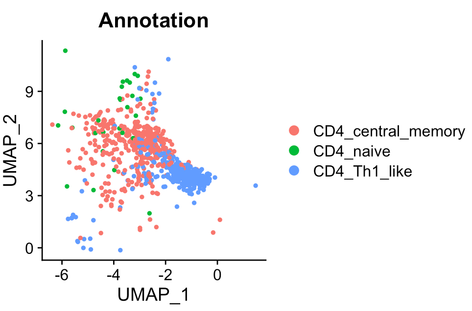
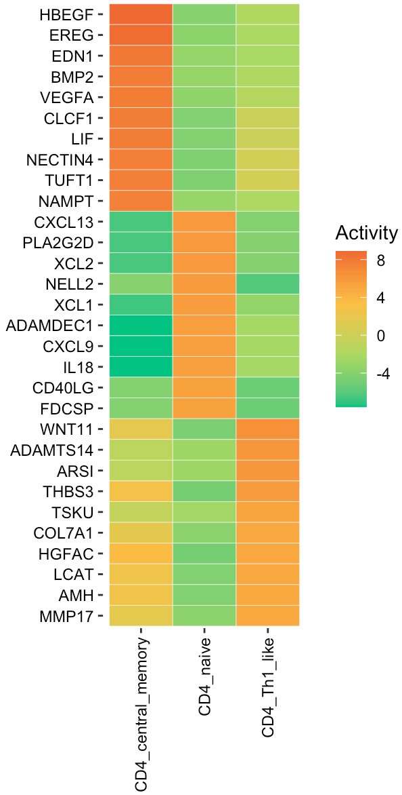

Secreted protein signaling activity for distinct cell states from scRNA-Seq data
Source:vignettes/scState.Rmd
scState.RmdThis tutorial demonstrates how to infer secreted protein signaling activity in various cell states. For this demonstration, we employ an ovarian cancer scRNA-Seq study. Using the SecAct framework, we will estimate the signaling activity of secreted proteins for different CD4+ T cell states.
Load scRNA-Seq data
The scRNA-Seq data of CD4+ T cells is stored in a Seurat object. Three cell states are annotated in this dataset, i.e., naive, central memory, and helper 1-like.
library(SecAct)
library(Seurat)
# load scRNA-Seq data
dataPath <- file.path(system.file(package="SecAct"), "extdata/")
Seurat_obj <- readRDS(paste0(dataPath,"OV_scRNAseq_CD4.rds"))
# cell count
table(Seurat_obj@meta.data[,"Annotation"])
## CD4_central_memory CD4_naive CD4_Th1_like
## 402 28 358
# show UMAP plot
Seurat::DimPlot(Seurat_obj, reduction = "umap", group.by = "Annotation")
Infer secreted protein activity
After loading scRNA-Seq data data, user can input
Seurat_obj into SecAct.activity.inference to
infer the signaling activities of secreted proteins for various cell
states. Also, you need to claim which column in the meta matrix of
Seurat object has cell state information. In this case, the column name
is “Annotation” and thus assign
cellType_meta = "Annotation". User can find the SecAct
results in
Seurat_obj @misc $SecAct_output $SecretedProteinActivity.
# infer activity; ~2 mins
Seurat_obj <- SecAct.activity.inference.scRNAseq(Seurat_obj, cellType_meta="Annotation")
# SecretedProteinActivity$zscore stores activity
act <- Seurat_obj @misc $SecAct_output $SecretedProteinActivity$zscore
# show activity
head(act)The inferred protein activity is a relative measure. A positive value indicates high activity in the corresponding cell states, while a negative value signifies low activity.
Visualize activity
User can visualize any secreted proteins of interest using
SecAct.heatmap.plot. Here, we select the top active
secreted proteins (SPs) for each cell state.
# select top secreted proteins
n <- 10
SPs.1 <- names(sort(act[,1],decreasing=T))[1:n]
SPs.2 <- names(sort(act[,2],decreasing=T))[1:n]
SPs.3 <- names(sort(act[,3],decreasing=T))[1:n]
SPs <- c(SPs.1, SPs.2, SPs.3)
# user can assign any secreted proteins to SPs
# subset act matrix
fg.mat <- act[SPs,]
# visualize in heatmap
SecAct.heatmap.plot(fg.mat)